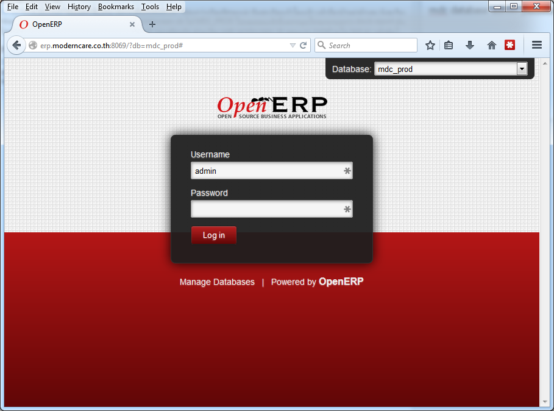
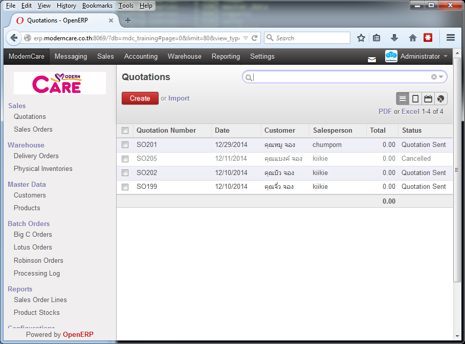

การล็อกอินเข้าสู่ระบบ (login)¶
การเข้าสู่ระบบ ทำได้โดยใช้เว็บเบราว์เซอร์ Chrome หรือ Firefox (ไม่แนะนำให้ใช้ Internet Explorer) และเข้าไปที่ http://erp.moderncare.co.th:8069

หากพบว่ามีช่องตัวเลือก Database: อยู่มุมด้านบนขวามือ หมายความว่า ณ เวลานั้น ระบบมีฐานข้อมูลมากกว่าหนึ่งอัน เราสามารถเลือกเข้าใช้ฐานข้อมูลที่ต้องการได้
| ฐานข้อมูล | รายละเอียด |
|---|---|
| mdc_prod | ฐานข้อมูลสำหรับใช้งานจริง |
| mdc_training | ฐานข้อมูลเพื่อการทดสอบ |
ป้อน Username และ Password ตามที่ได้รับจากผู้ควบคุมระบบ แล้วคลิ้ก Log in หากการเข้าสู่ระบบสำเร็จ จะพบกับเมนูดังรูป โดยมีชื่อผู้ใช้อยู่ที่มุมบนขวาของจอภาพ

Note
ทั้ง Username และ Password จะต้องเป็นตัวอักษรภาษาอังกฤษหรือตัวเลข โดยที่ตัวพิมพ์ใหญ่และตัวพิมพ์เล็ก จะมีความแตกต่างกัน (case-sensitive) ตัวอย่างเช่น รหัสผ่านที่เป็น MyPassword จะแตกต่างจาก mypassword